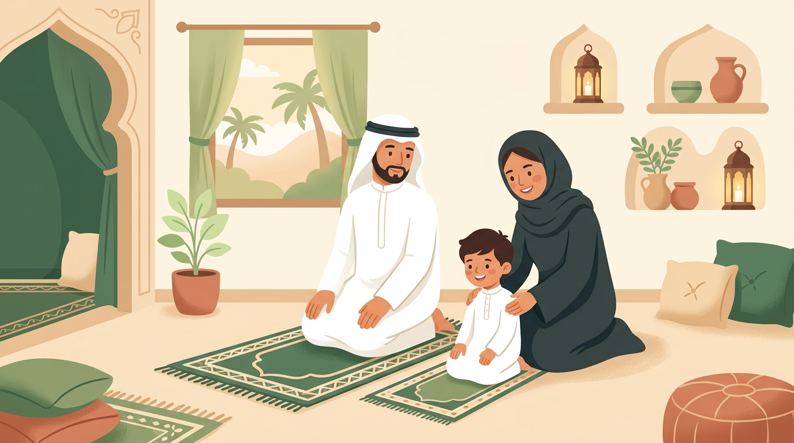

كيف تعلّم طفلك الصلاة بحب — دليل عملي حسب العمر

أذان المغرب. تنادي ابنك ذو السبع سنوات: "يلّا نصلّي!" يجيبك وهو ملتصق بالآيباد: "بعدين!" تحتار: تصرخ؟ تسحب الجهاز؟ تصلّي وتتركه؟ تهدّد بالعقاب؟
كلنا مرّينا بهذا الموقف. والخبر اللي يريحك: تعليم الصلاة مو معركة لازم تكسبها — هو رحلة تبنيها مع طفلك بالتدريج. هذا الدليل مو عن خطوات الصلاة نفسها — هذا دليل لك أنت كأب وأم: كيف تزرع حب الصلاة في قلب طفلك.
لماذا تعليم الأطفال الصلاة مختلف عن أي عادة ثانية
تعليم طفلك يفرش أسنانه = عادة صحية. تعليمه يرتّب غرفته = مهارة حياتية. لكن تعليمه الصلاة = بناء علاقة بينه وبين الله.
الفرق كبير. لأنك لو أجبرت طفلك على تنظيف أسنانه وهو كاره — بيستمر يفرشها بحكم العادة. لكن لو أجبرته على الصلاة وهو كاره — ممكن يتركها أول ما يستقل بنفسه. لأن الصلاة علاقة قلبية قبل ما تكون حركة جسدية.
القاعدة الذهبية: أنت تزرع بذرة، مو تبني جدار. البذرة تحتاج صبر وسقاية ووقت. الجدار تبنيه بالقوة — لكنه ممكن ينهد. البذرة لو اعتنيت فيها تصير شجرة ما أحد يقدر يقلعها.
متى نبدأ؟ خارطة طريق تعليم الصلاة حسب العمر
٣-٦ سنوات: مرحلة القدوة — صلِّ أمامهم ولا تطلب منهم شيء
في هالعمر، طفلك في ما يسمّيه عالم النفس بياجيه "مرحلة ما قبل العمليات" — يتعلّم بالمشاهدة والتقليد أكثر بكثير من الكلام. ما يفهم "ليش نصلّي" بعد، لكنه يقدر يقلّد حركاتك بالضبط. وعالم النفس ألبرت باندورا أثبت في نظرية التعلّم الاجتماعي أن الأطفال يكتسبون السلوكيات بملاحظة وتقليد الكبار — خصوصاً الوالدين.
في هالمرحلة، كل المطلوب منك:
- صلِّ أمام أطفالك — لا تختفي في الغرفة
- لو طفلك وقف جنبك وقلّدك — ابتسم وشجّعه، حتى لو حركاته غلط
- لو ما وقف — لا تعلّق. الحقيقة إنه يشاهدك حتى لو ما تحس
- اذكر الله أمامهم بشكل طبيعي: "الحمدلله، يلّا بنصلّي عشان نشكر ربنا"
نصيحة عملية: جيب لطفلك سجّادة صلاة صغيرة خاصة فيه — بلون يحبه أو برسمة تعجبه. حتى لو ما استخدمها كل يوم، هي "دعوة مفتوحة" تقوله: عندك مكان جنبي.
٧-٩ سنوات: مرحلة الدعوة اللطيفة — "مروا" تعني ادعوا، مو أجبروا
هنا يجي الحديث الشريف الذي يتكلّم عنه كل أب وأم:
كلمة "مروا" في اللغة العربية تحمل معنى الأمر اللطيف والدعوة، مو الإجبار القاسي. الشيخ ابن باز رحمه الله وضّح هالنقطة بعنوان واضح: "أمر الصبي بالصلاة تمريناً لا وجوباً" — يعني الهدف تدريب وتعويد، مو فرض ديني على طفل غير مكلّف. والعلماء قالوا إن الغاية هي "لِيَعْتادوا ويَسْتَأنِسوا بالصلاة" — يعني يتعوّدوا عليها ويحبّوها.
والعلم الحديث يوافق: عند السبع سنوات، الطفل يدخل ما يسمّيه بياجيه "مرحلة العمليات الملموسة" — يبدأ يفهم القواعد والروتين والسبب والنتيجة. يعني يقدر يستوعب ليش نصلّي، مو بس كيف نصلّي. هذا وقتك تتكلّم معه عن الصلاة كمحادثة مع الله:
- "تعرف إن الله يحب يسمع صوتك وأنت تدعيه؟"
- "الصلاة مثل ما تكلّمني وأنا أسمعك — أنت تكلّم الله وهو يسمعك"
- "لو عندك شي يضايقك، قوله لله في السجود — هو أقرب واحد لك"
خطأ شائع: ربط الصلاة بالعقاب. "لو ما صلّيت ما بتلعب!" — هالأسلوب يخلّي الطفل يربط الصلاة بشي سلبي. بدال كذا: "لو صلّينا سوا ممكن بعدها نلعب سوا" — ربط الصلاة بشي حلو.
١٠ سنوات فما فوق: مرحلة بناء الالتزام — بالرحمة مو بالقسوة
عند العشر سنوات، الطفل يبدأ يدخل مرحلة ما قبل المراهقة. يبي يستقل. يبي يحس إن قراراته قراراته هو — مو مفروضة عليه.
هنا التحدّي: كيف تبني التزام بدون ما يحس إنك تتحكّم فيه؟
- خلّيه يختار: "تبي تصلّي الظهر الحين أو بعد ما تخلّص اللي تسوّيه؟" — أعطيه خيار الوقت، مو خيار الصلاة نفسها
- صلّوا سوا: الصلاة الجماعية في البيت — حتى لو اثنينكم بس — تخلق عادة أقوى من الصلاة الفردية
- تكلّم عن تجربتك: "أنا أحياناً أتكاسل عن صلاة الفجر — لكن لما أصلّيها يومي يكون أحلى." الصدق يبني ثقة
- لا تراقب وتحاسب: "صلّيت؟" كل خمس دقايق = ضغط. بدالها: "يلّا نصلّي" = دعوة مشتركة
"واضربوهم عليها لعشر" — ماذا يعني هذا الحديث فعلاً؟
هذا الجزء من الحديث يسبّب قلق كبير للأهل المعاصرين. "يعني أضرب ولدي عشان يصلّي؟!" — لا. وهذا ما قاله العلماء:
الشيخ ابن عثيمين رحمه الله أوضح أن "الضرب" هنا ضرب تأديب لا ضرب إيذاء — يعني لا يترك أثراً ولا يكون على الوجه ولا بقسوة. وأضاف أن الهدف هو التنبيه، مو الإيلام.
والشيخ الألباني رحمه الله قال صراحة: "لا نرى أن تُستعمل وسيلة الضرب كمبدأ عام للتربية لأن التربية لا تقوم على الشدة." يعني حتى عند العشر سنوات — الأصل الرفق، والضرب استثناء نادر وأخير.
والأجمل: لاحظ إن الحديث يعطيك ثلاث سنوات كاملة من التشجيع الصافي (من ٧ لـ١٠) قبل أي حديث عن محاسبة. ثلاث سنوات تبني فيها حب الصلاة بالقدوة والدعوة اللطيفة. هذا تصميم تربوي عظيم.
كثير من العلماء المعاصرين يفسّرون "الضرب" بمعنى أوسع: فرض العواقب المناسبة. يعني عند العشر سنوات، لو الطفل تكاسل بشكل متكرّر، تقدر تربط بين الصلاة وبين مسؤولياته — مو كعقاب، بل كجزء من نضجه.
مثال واقعي: "أنت كبرت ماشاء الله. واللي كبر عنده مسؤوليات — الصلاة من أهمها. لو ما قدرت تلتزم بالصلاة، يمكن نحتاج نراجع مسؤوليات ثانية مثل وقت الجوال." — هذا "ضرب" بالمفهوم المعاصر: عاقبة منطقية، مو أذى جسدي.
هذا هو نموذجنا في التعامل مع الأطفال: النبي ﷺ لم يضرب طفلاً قط، ولم يوبّخ أنساً وهو يخدمه عشر سنوات. الرفق واللين هو الأصل.
أخطاء شائعة تبعد طفلك عن الصلاة
كثير من الأهل — بنيّة حسنة — يسوّون أشياء تبعد أطفالهم عن الصلاة بدال ما تقرّبهم. تعرّف عليها عشان تتجنّبها:
- الإجبار والصراخ: "قوم صلِّ الحين!" كل يوم = الصلاة صارت مصدر توتر. الطفل يسمع "صلِّ" ويحس بضغط، مو بحب
- المقارنة بالأخوان أو أولاد الجيران: "شوف ولد عمك يصلّي وأنت لا!" — المقارنة تولّد كره، مو تحفيز
- ربط الصلاة بالعقاب: "لو ما صلّيت ما بتاخذ الجوال" — الصلاة صارت ثمن الجوال، مو علاقة مع الله
- التشكيك في نيّته: "أنت تصلّي بس عشان أشوفك" — حتى لو صحيح، لا تقولها. خلّه يصلّي ولو لأي سبب — النيّة تنضج مع الوقت
- الكمالية: "صلاتك غلط، أعدها" كل مرة — الإحباط المستمر يخلّيه يوقف بالكامل. صحّح بلطف شي واحد كل فترة
دراسة بريطانية من Money Advice Service عام 2013 أثبتت أن العادات والسلوكيات تتشكّل بشكل كبير عند عمر ٧ سنوات — وبعدها يصبح تغييرها أصعب بكثير. وأبحاث علم النفس التربوي تؤكّد أن الربط العاطفي الإيجابي هو أقوى عامل في ثبات العادة عند الأطفال — أقوى من المكافآت وأقوى من العقاب. يعني: الطفل اللي يربط الصلاة بشعور حلو (قرب من أبوه، هدوء، فخر) بيستمر فيها أكثر من اللي يربطها بخوف أو ضغط.
طفلي يرفض يصلّي — ماذا أفعل؟
هذا السؤال اللي يبحث عنه آلاف الأهل. والجواب يعتمد على السبب:
السيناريو ١: "بعدين!" (التأجيل المستمر)
غالباً الطفل مو رافض — هو مشغول أو مستمتع بشي ثاني. الحل: أعطيه إنذار مسبق. "بعد ١٠ دقايق بنصلّي" — بدال ما تطلبه فجأة. خلّيه ينهي اللي يسوّيه ويجي بنفسه.
السيناريو ٢: "ما أبي!" (الرفض الصريح)
هنا لازم تسأل بدون ما تزعل: "ليش ما تبي؟ وش اللي يضايقك؟" ممكن السبب: ملل، ما يفهم الفائدة، أو حتى ضغط اجتماعي ("أصحابي ما يصلّون"). اسمع — ثم عالج السبب الحقيقي.
السيناريو ٣: يصلّي بس بسرعة وبدون خشوع
لا تتوقّع خشوع البالغين من طفل ٨ سنوات. الهدف الآن هو بناء العادة — الخشوع يجي مع النضج. شجّع بدون تنقد: "ماشاء الله صلّيت! تعرف لو تمهّلت شوي في السجود بتحس براحة حلوة."
السيناريو ٤: يصلّي بس لما يشوفك
هذا طبيعي تماماً في البداية. الطفل يصلّي عشانك — وهذا مو نفاق، هذا تعلّم اجتماعي. مع الوقت، الصلاة بتتحوّل من "عشان بابا يرضى" إلى "عشان أنا أبيها." لا تعلّق ولا تشكّك — بس استمر في القدوة.
اصنع بيئة صلاة في بيتك
البيئة تشكّل السلوك. لو بيتك فيه مكان مخصّص ومحبّب للصلاة، الطفل بيتعلّق فيه طبيعياً.
ركن الصلاة: خصّص زاوية صغيرة في البيت — حتى لو متر في متر. حط فيها:
- سجّادة صلاة مميّزة (خلّي كل طفل يختار سجادته)
- رف صغير عليه مصحف وسبحة
- لوحة أو ملصق بأوقات الصلاة
- إضاءة هادئة — خلّيه مكان يحبّون يجلسون فيه
محطة الوضوء: في الحمام، حط كرسي صغير (step stool) عشان الطفل يوصل للمغسلة بنفسه. لو تقدر تعلّق ملصق بخطوات الوضوء — أحسن. الاستقلالية في الوضوء تعطي الطفل ثقة وتحسّسه إنه "كبير."
جدول متابعة الصلاة: اطبع جدول أسبوعي بسيط فيه الصلوات الخمس. كل مرة يصلّي الطفل يحط ملصق أو يلوّن المربّع. الهدف مو ملاحقته — الهدف إنه يشوف تقدّمه بنفسه ويفرح فيه.
تطبيقات مساعدة: في تطبيقات عربية لتعليم الصلاة والوضوء للأطفال بطريقة تفاعلية — استخدمها كأداة مساندة، مو بديل عن القدوة الحية.
قصص من السنة: كيف تعامل النبي ﷺ مع الأطفال في الصلاة
أجمل ما في سيرة النبي ﷺ مع الأطفال إنه ما عاملهم بقسوة أبداً — حتى وهو يصلّي:
تخيّل! إمام المسلمين، في صلاة، يحمل حفيدته الصغيرة. ما قال "أبعدوها" ولا "ما ينفع." حملها بحب وكمّل صلاته. هذا يقولك: وجود الأطفال في الصلاة مو إزعاج — هو فرصة تعليمية.
أطال سجوده — مو عشان يخوّفهم أو يعلّمهم درس — بل عشان ما يبي يزعجهم وهم يلعبون! هذا مستوى من الرحمة يخلّيك تعيد تفكيرك في كل مرة طفلك أزعجك وأنت تصلّي.
وعن عبدالله بن أبي قتادة عن أبيه رضي الله عنه أن النبي ﷺ قصّر صلاته لأنه سمع طفلاً يبكي — خشية أن تُفتن أمه (رواه البخاري). يعني: راحة الطفل والأم كانت أولوية حتى في الصلاة.
هذي القصص مو بس سيرة نقرأها — هي منهج نتبعه. لو طفلك ركض أمامك وأنت تصلّي، أو جلس في حضنك في التشهّد — ابتسم من قلبك. هذي لحظة تعليم أعمق من أي درس.
خلاصة عملية — ابدأ من اليوم
- صلِّ أمام أطفالك — القدوة أقوى من ألف كلمة
- لا تُجبر ولا تصرخ — "مروا" تعني ادعوا بلطف
- اربط الصلاة بمشاعر حلوة — مو بعقاب أو ضغط
- جهّز ركن صلاة في البيت — سجادة خاصة وجدول متابعة
- تذكّر: أنت تزرع بذرة. بالصبر والحب بتكبر إن شاء الله
الخلاصة
تعليم الصلاة رحلة طويلة — مو محادثة واحدة ولا أسبوع واحد. رحلة ممكن تاخذ سنوات. وهذا طبيعي.
لا تقيس نجاحك بـ"كم صلاة صلّاها هالأسبوع." قيسه بـ"هل طفلي يشوف الصلاة كشي حلو ولا كشي ثقيل؟" لو الجواب "حلو" — أنت على الطريق الصحيح، حتى لو ما يصلّي كل صلاة لسه.
النبي ﷺ اللي حمل أمامة وهو يصلّي، واللي أطال سجوده عشان حفيده على ظهره — هو نفسه اللي قال: "مروا أولادكم." الأمر جاء من قلب مليان رحمة. وبنفس الرحمة نربّي أطفالنا.
أنتِ أم رائعة وأب عظيم لأنكم هنا تبحثون وتتعلّمون. والله يعينكم ويبارك في أولادكم.